[phone] SLAM AR scan ─────▶ COLMAP model built live on the phone │ (sessions/<id>/images + sparse/0) ▼ USB (adb) [PC] rgbm_pipeline.py run ──▶ package (0.1 s) or --refine (~2 min) │ ▼ [PC] gaussian-splatting train.py ──▶ 3D model
I work on 3D reconstruction and novel view synthesis, mostly on 3D Gaussian Splatting. The question running through my research is how a reconstruction can know which parts of itself are wrong. Photometric optimization is happy to invent geometry that renders correctly from the training views and falls apart everywhere else, and no amount of PSNR will report this. So I build methods that accumulate evidence about each primitive over time, suppress what cannot be supported without erasing genuine thin structure, and — most recently — plan where a camera should look next in order to repair what is already broken.
I also build the systems that surround that research: on-device capture applications that run structure-from-motion on the phone while you scan, evaluation metrics designed to catch the artifacts that PSNR ignores, metric-scale estimation that knows when to refuse, and low-VRAM pipelines meant to survive outside a lab, in remote inspection and digital-twin deployments.
Each project below links to its repository. Most are private while the corresponding paper is under review — the links are listed so the codebase behind each result is identified, and access can be granted on request.
Gaussian Splatting — Research
First author · training framework, experiments, and paper
3D Gaussian Splatting (3DGS) renders high-quality novel views in real time, yet purely photometric optimization leaves floaters — primitives that occupy free space without multi-view geometric support — most severely in indoor and artifact-prone regions. Prior remedies treat floater removal as a one-shot decision: a threshold on opacity, gradient, or depth error at a single step. We argue that geometric unreliability is better estimated over time. We introduce TIDI-GS (Temporal Instability estimation with Detail-preserving Importance-weighting for Gaussian Splatting), a training-time framework that maintains a per-Gaussian reliability state, accumulating observation support, spatial isolation, structural cues, and monocular depth consistency across training. These weak cues are fused via Noisy-OR and log-odds aggregation into a temporally smoothed floater-risk score, which drives reliability-gated rendering, a targeted suppression loss, and conservative cleanup. Detail-preserving cues protect thin and high-frequency structure, guarding against the over-removal that undermines aggressive pruning. TIDI-GS leaves the 3DGS rasterizer unchanged. It achieves the best or competitive perceptual quality (SSIM and LPIPS) while maintaining competitive PSNR, with substantial LPIPS reductions, and its point-budgeted implementation reduces peak VRAM by over 34% on Tanks and Temples.
3D Gaussian Splatting renders high-quality novel views in real time, but purely photometric optimization leaves floaters — primitives that occupy free space without multi-view geometric support. They help minimize training-view loss and therefore have no incentive to disappear, yet from a novel viewpoint they read as haze, ghosting, or spurious structure. The problem is worst indoors, where textureless walls and ceilings offer little photometric gradient to anchor Gaussians, and where speculars, cast shadows, transparency, and cluttered occlusion boundaries produce view-dependent appearance the loss cannot separate from stable geometry.
Existing remedies almost all share a shape: a one-shot decision — a threshold on opacity, gradient, or depth error evaluated at a single training step. Opacity pruning cannot tell a floater from a valid thin structure, since both carry low opacity. Pixel-aware gradient control and learned pruning target density or compactness rather than geometric reliability. Coarse-to-fine schedules and image-level depth losses act globally, without ever identifying the specific Gaussians responsible.
TIDI-GS argues that geometric unreliability is better estimated over time. Every Gaussian carries a compact persistent state recording how consistently it has been observed, whether its depth agrees with a monocular prior across views, how isolated it is from its neighbors, and whether its local appearance encodes fine geometric detail. These are individually weak cues; fused through Noisy-OR evidence combination and log-odds aggregation, they yield a temporally smoothed floater-risk score. That score then drives three mechanisms at different granularities: reliability-gated rendering, a targeted opacity suppression loss, and conservative late-stage cleanup that physically removes only primitives whose instability has persisted across multiple evidence windows. Detail-preserving cues run in parallel to protect thin and high-frequency geometry — the failure mode that undermines purely instability-driven pruning.
The whole framework operates at training time only. The 3DGS rasterization operator is never modified; at test time the cleaned Gaussian set is rendered with the stock rasterizer.
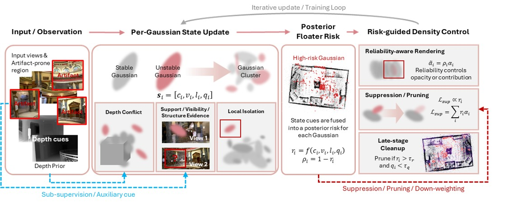
Against general-purpose Gaussian splatting methods at 30K iterations, TIDI-GS takes the best SSIM and LPIPS on all three benchmarks while keeping PSNR competitive. The LPIPS margins are the substantive ones: floaters occupy few pixels, so they barely move PSNR, but they are perceptually salient, which is exactly what LPIPS measures.
| Method | Tanks and Temples | Mip-NeRF 360 | Deep Blending | |||||||||
|---|---|---|---|---|---|---|---|---|---|---|---|---|
| PSNR↑ | SSIM↑ | LPIPS↓ | L1↓ | PSNR↑ | SSIM↑ | LPIPS↓ | L1↓ | PSNR↑ | SSIM↑ | LPIPS↓ | L1↓ | |
| 3DGS | 26.17 | 0.878 | 0.192 | 0.032 | 30.87 | 0.928 | 0.081 | 0.020 | 34.94 | 0.952 | 0.210 | 0.008 |
| Mip-Splatting | 24.63 | 0.779 | 0.268 | 0.072 | 30.64 | 0.901 | 0.176 | 0.020 | 32.14 | 0.937 | 0.243 | 0.013 |
| 2DGS | 23.37 | 0.812 | 0.298 | 0.045 | 28.53 | 0.863 | 0.220 | 0.027 | 31.15 | 0.933 | 0.271 | 0.013 |
| Pixel-GS | 25.55 | 0.849 | 0.246 | 0.034 | 30.25 | 0.894 | 0.174 | 0.023 | 34.08 | 0.948 | 0.233 | 0.010 |
| LP-3DGS | 25.45 | 0.845 | 0.173 | 0.033 | 29.56 | 0.886 | 0.096 | 0.024 | 34.55 | 0.946 | 0.141 | 0.011 |
| TIDI-GS (Ours) | 26.05 | 0.885 | 0.095 | 0.034 | 31.47 | 0.940 | 0.072 | 0.019 | 35.28 | 0.957 | 0.049 | 0.010 |
Resource use (Tanks and Temples, 30K it.)
| Method | VRAM | #Gauss | FPS |
|---|---|---|---|
| 3DGS | 14.5 GiB | 527K | 142 |
| LP-3DGS | 14.2 GiB | 557K | 138 |
| TIDI-GS | 9.5 GiB | 426K | 156 |
External floater metrics (Creepy Attic)
| Variant | Depth Reproj.↓ | Free-Space Opacity↓ |
|---|---|---|
| Full model | 0.018 | 0.023 |
| No cleanup | 0.031 | 0.041 |
| No structure evidence | 0.047 | 0.089 |
| No depth state | 0.038 | 0.052 |
The ablation separates cleanly into two regimes. Cleanup trades LPIPS at nearly constant PSNR: the no-cleanup variant is the only one whose PSNR matches the full model (35.93 vs. 35.94 dB) yet its LPIPS is more than three times worse (0.064 vs. 0.020). A three-seed repetition confirms the PSNR equivalence sits well inside seed noise (0.03 dB against ≈1.1 dB seed std) while the LPIPS spread (≤0.005) is an order of magnitude below the 0.044 gap. Structure evidence is essential: removing it costs 5.9 dB PSNR and pushes LPIPS to 0.179 — the single most destructive ablation, because valid thin structures get misclassified and over-suppressed. Two external metrics computed independently of any internal state — multi-view depth reprojection error and free-space opacity — rank the full model best on both, and rank the no-structure-evidence variant worst despite its aggressive cleanup, exactly as over-removal would predict.
Deep Blending (Creepy Attic, Dr Johnson, Playroom), Mip-NeRF 360 (Room, Counter), Tanks and Temples (Auditorium).
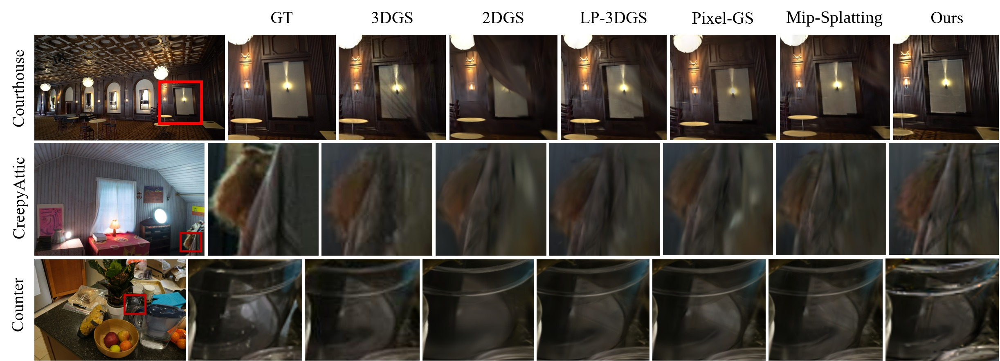
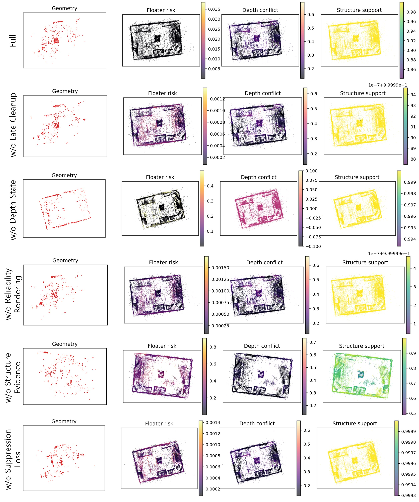
First author · method, implementation, experiments, rebuttal
3D Gaussian Splatting enables efficient novel view synthesis, yet it often produces floaters that reduce photometric error while lacking stable surface support. These artifacts degrade view consistency and compromise the geometric reliability of the representation. We propose FOGS, a feature-to-geometry training framework that uses a semantic teacher to regulate Gaussian density during optimization. Rather than applying per-view semantic losses, FOGS maintains a compact and persistent semantic state for each Gaussian by fusing multi-view teacher predictions with entropy-based confidence. This state drives three operators. Semantic ray carving penalizes near-depth density that contributes to teacher-background pixels. Semantic gravity forms high-confidence anchors to relocate supported uncertain density and suppress unsupported blobs. Uncertainty–opacity coupling discourages persistently uncertain Gaussians from becoming visually influential even when the photometric objective can be satisfied. A fog-to-surface condensation step sharpens locally supported fog by shrinking covariance and rebalancing opacity. FOGS is computationally efficient and adds minimal overhead by storing only a compact per-Gaussian state and reusing standard 3DGS rendering weights.
Where TIDI-GS reasons about geometry, FOGS asks whether semantics can regulate Gaussian density. The premise is that a segmentation network already knows a great deal about what should and should not be solid — sky is not a surface, and density accumulating in front of a wall is suspicious regardless of how well it fits the training pixels.
The usual way to use that knowledge is a per-view semantic loss, which throws the information away and re-derives it every iteration. FOGS instead fuses a frozen segmentation teacher into a compact, persistent per-Gaussian semantic state (CSF), combining multi-view teacher predictions weighted by entropy-based confidence. Because the state accumulates, it becomes a stable estimate of semantic support and uncertainty rather than a per-frame opinion.
That state drives three operators. Semantic ray carving penalizes near-depth density that contributes to teacher-background pixels — density where the teacher is confident nothing should be. Semantic gravity forms high-confidence anchors and relocates supported-but-uncertain density toward them while suppressing unsupported blobs, so density is moved rather than merely deleted. Uncertainty–opacity coupling prevents persistently uncertain Gaussians from becoming visually influential even when the photometric objective would happily let them. A final fog-to-surface condensation step sharpens locally supported fog by shrinking covariance and rebalancing opacity, recovering detail that the cleaning stage would otherwise leave soft.
The design is deliberately cheap: only a compact per-Gaussian state is stored, and standard 3DGS rendering weights are reused rather than recomputed, so training is faster than vanilla 3DGS in every scene measured.
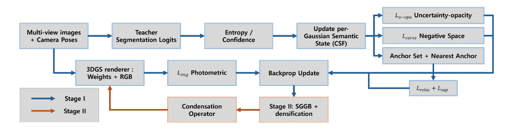
On Tanks and Temples, FOGS achieves the highest PSNR on all four scenes and the best SSIM in most, with the largest margin on Palace (+7.7 dB over the strongest baseline) — a scene with wide baselines and heavy occlusion where unsupported density accumulates freely. It does so while training faster than 3DGS on every scene.
| Method | Auditorium | Museum | Palace | Temple | ||||||||
|---|---|---|---|---|---|---|---|---|---|---|---|---|
| PSNR↑ | SSIM↑ | LPIPS↓ | PSNR↑ | SSIM↑ | LPIPS↓ | PSNR↑ | SSIM↑ | LPIPS↓ | PSNR↑ | SSIM↑ | LPIPS↓ | |
| DeSplat | 23.13 | 0.865 | 0.146 | 20.64 | 0.807 | 0.108 | 19.15 | 0.733 | 0.253 | 20.72 | 0.818 | 0.155 |
| AbsGS | 24.64 | 0.883 | 0.168 | 22.40 | 0.841 | 0.167 | 19.78 | 0.759 | 0.286 | 18.34 | 0.744 | 0.288 |
| Pixel-GS | 24.38 | 0.882 | 0.168 | 22.05 | 0.834 | 0.175 | 19.77 | 0.768 | 0.292 | 18.57 | 0.778 | 0.266 |
| CleanGS | 15.17 | 0.553 | 0.392 | 9.52 | 0.233 | 0.569 | 7.33 | 0.332 | 0.528 | 7.65 | 0.483 | 0.439 |
| 3DGS | 24.13 | 0.871 | 0.193 | 20.92 | 0.764 | 0.160 | 19.63 | 0.736 | 0.350 | 20.85 | 0.806 | 0.222 |
| FOGS (Ours) | 27.13 | 0.913 | 0.203 | 25.62 | 0.826 | 0.083 | 27.46 | 0.910 | 0.128 | 24.55 | 0.821 | 0.284 |
Training time, Tanks and Temples
| Method | Auditorium | Museum | Palace | Temple |
|---|---|---|---|---|
| DeSplat | 15m 53s | 14m 50s | 9m 51s | 16m 36s |
| AbsGS | 14m 34s | 35m 23s | 15m 33s | 18m 11s |
| Pixel-GS | 23m 53s | 44m 24s | 21m 52s | 26m 57s |
| 3DGS | 10m 54s | 20m 55s | 11m 21s | 10m 56s |
| FOGS (Ours) | 9m 25s | 16m 25s | 10m 8s | 9m 51s |
Fly-throughs from the ECCV supplementary, rendered from the same captures and the same camera paths under both methods. These are residential interiors — the regime the method was built for, and the one where unsupported density is most visible: haze across ceilings, fog hanging in front of white walls, and smeared structure around window frames and glossy floors.
Kitchen — 3DGS baseline
Kitchen — FOGS
Living room — 3DGS baseline
Living room — FOGS
First author · problem analysis, method, offline campaign and closed-loop simulation
Active reconstruction planners ask where the map is incomplete; we show they must also ask where it is wrong. On indoor 3D Gaussian Splatting (3DGS) maps the dominant novel-view corruption is a collective, view-dependent ghost: near-surface structure that overfits speculars, renders plausibly from every training view, and is invisible in principle to per-primitive signals. The photometric reliability driving a state-of-the-art planner misses 83–95% of harmful primitives across five model–scene combinations and is actively repelled from the regions that need re-observation. Because the failure is collective and view-dependent, it is measurable only in view space. From this analysis we derive a GT-free virtual-view instability score V(σ), warp-consistency uncertainty re-engineered for a robotic mapping loop, and show that since repair does not propagate spatially, capturing at arg max V(σ) is itself the repair mechanism, unifying exploration and repair in one objective. A single trajectory-adaptive policy, with no per-scene tuning, outperforms coverage, random, FisherRF, and GauSS-MI schedules across six real indoor scenes (four held out from all design decisions) and five closed-loop simulated worlds, one driven by an independent ray-traced renderer; its advantage survives 2° of pose error and a hard robot motion budget, at 6.7× lower scoring cost, reaching coverage's final quality with up to 29% fewer views. We close with an oracle repair bound and a negative result: GT-free per-primitive ghost identification remains open.
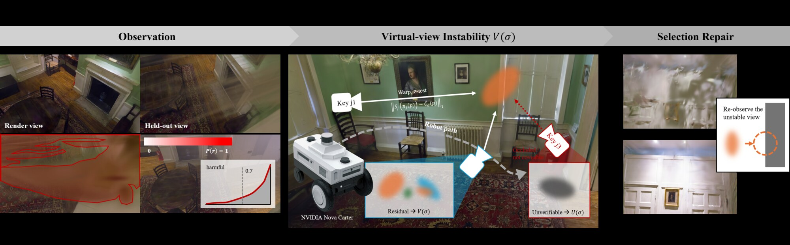
Active reconstruction plans toward what has not yet been seen. This project argues that is only half the job: a planner also has to know where the map has been built wrong, and go back. The two are not the same signal, and conflating them is why coverage-driven policies plateau.
The work opens with an analysis that is largely a sequence of negative results, and those negative results are the contribution. First, the closest competitor is structurally blind to the problem: GauSS-MI's inverse sensor model only produces "unreliable" evidence when pixel loss exceeds ≈0.59, so on a converged map just 38 of 2.8M Gaussians ever receive negative evidence. Its miss rate on genuinely harmful primitives is 88–95%, and because the harmful set's median reliability is 0.976–0.999 its information gain is ≈0 — the planner actively avoids re-observing corrupted regions.
Second, the dominant indoor corruption is not what the floater literature assumes. It is not free-space floaters but view-dependent ghosts: collective, near-surface, wispy structures that overfit speculars and reflections. Nine static per-Gaussian cues were tested and all sit near chance (AUC 0.44–0.65); an uncertainty EMA even correlates negatively (−0.23), because ghosts look confident. Harmfulness turns out to be a collective, viewpoint-dependent property, not something any single primitive carries.
That motivates measuring risk in view space instead. The proposed GT-free virtual-view instability signal V(σ) — built from covisibility neighbors, an occlusion z-test, and a verifiability channel — predicts actual novel-view error at Spearman 0.63, against 0.33 for GauSS-MI's mutual information on the same map and poses.
A third negative result shapes the final method. Repair does not propagate spatially: capturing eight neighboring frames around a ghost view is exactly as useless as capturing distant views (−0.05 either way). To fix a broken viewpoint you must capture that viewpoint. Next-best-view selection and repair therefore collapse into a single mechanism rather than two subsystems, which is the cleanest argument in the paper for why a coverage policy cannot fix ghosts even in principle.
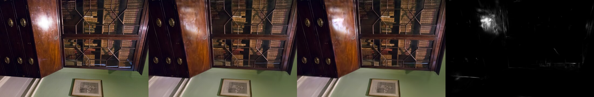
Orbiting the ghost: the full map (left) against the same map with the oracle harmful set removed (right). The corruption only exists off the capture path.
The oracle repair upper bound at held-out view 22 — +1.03 dB from removing primitives no per-primitive cue can identify.
The offline campaign compares policies on held-out probe PSNR across two trajectory geometries. An unexpected finding is that the right way to aggregate instability depends on scene geometry: min-over-many wins on orbital trajectories, mean-over-few-covisible wins on walkthroughs. This is real rather than noise — so the deployed policy is adaptive, discriminating trajectory type online from the convergence of the forward-axis centroid (0.852 for orbital vs. 0.253 for walkthrough — a clean separation) and freezing the choice after 16 views.
| Policy | Dr Johnson (walkthrough) | Room (orbital) |
|---|---|---|
| adaptive V(σ) — deployed | 22.5–23.2 | 27.9–28.6 |
| V-mean covisibility (ours) | 23.23 ± 0.23 (n=5) | 26.5–27.0 |
| V-min k8 (WarpRF Eq. 9) | 21.94 | 27.82 ± 0.27 (n=5) |
| coverage | 20.92 | 26.92 ± 0.43 |
| random | 20.78 | 26.46 |
| GauSS-MI (MI policy) | 20.33 ± 0.87 (n=3) | 24.52 ± 0.43 (n=3) |
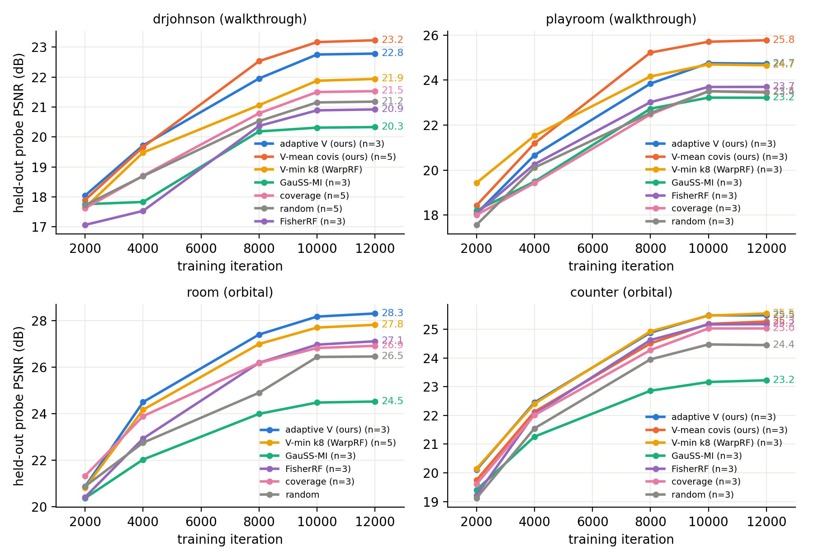
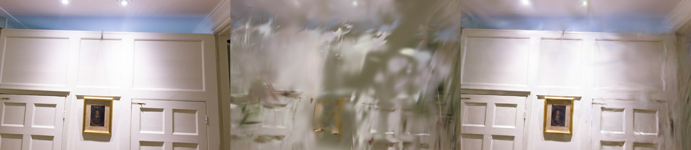
The same office scene planned by the adaptive V(σ) policy and by a coverage schedule, both at 60 views. Beyond the offline campaign, the policy also runs closed-loop in Isaac Sim, where the planner drives an actual robot under a motion budget rather than teleporting to arbitrary poses.
Office — adaptive V(σ) + guard (ours), 60 views
Office — coverage schedule, 60 views
Closed-loop active mapping in Isaac Sim — adaptive V(σ), coverage, and random planning the same world side by side, with the selected pose and probe PSNR updating as each map is built.
The full ICRA 2027 submission video: the blind spot, the signal, the policy, and the closed-loop robot runs.
First author · method, benchmark campaign, own-capture study, paper
A 3D Gaussian Splatting (3DGS) reconstruction inherits arbitrary units from structure-from-motion, so it cannot be measured or used to place AR content until someone supplies a scale. Both standard recipes are fragile on real captures: on five indoor scenes with tape-measured ceilings a quantile floor-to-ceiling heuristic errs by 27%, metric-depth alignment by 35–71% across three networks, and those networks disagree with each other by up to a factor of 2.5 while all are wrong. We recover the scale from the reconstruction's own semantic content and, just as importantly, refuse when the evidence is thin. A frozen 2D teacher labels Gaussians by visibility-aware voting: only views that actually see a Gaussian may vote on its label, which raises the scenes the estimator can correct from 16 to 28. Instance-level size priors (doors, furniture, the floor-to-ceiling gap) are then fused by a robust maximum-likelihood step under a quantile warm start; the fusion removes the catastrophic failures single-cue estimators cannot defend against; it does not improve the median. An inlier-mass test turns thin evidence into an explicit refusal that doubles as a router to a heavyweight metric model. On 47 ScanNet++ scenes with laser ground truth, under a configuration frozen after the first 19, it cuts the heuristic's mean error from 21.1% to 16.6%, and to 9.3% on the 28 scenes it acts on, at ~10 s per scene; routing only its refusals to MASt3R matches running MASt3R everywhere with 60% fewer invocations. Applied unchanged to 13 phone and drone captures of our own, it improves all five captures it acts on, abstains on the other eight, and degrades none. Along the way we report a measurement worth having on its own: a current feed-forward metric model scores 2.3% on a benchmark inside its training mixture, 5.6% on one it was evaluated against, and 28–35% on ordinary captures it has never seen, so a published metric-scale number is a best case rather than a deployment estimate.
The other papers here ask whether a reconstruction is geometrically right. This one asks whether it is measurable — and it is the piece of the portfolio that came directly out of deployment rather than out of a benchmark. A 3DGS scene reconstructed from a phone capture has no units. You cannot say how wide a corridor is, you cannot place a virtual object at human scale, and you cannot compare two scans of the same room.
The design commitment is refusal. Every existing recipe returns a number unconditionally, which is why they fail catastrophically and silently: metric-depth alignment errs by 35–71% on real indoor captures, and three networks running the same recipe disagree with each other by up to 2.5× while all of them are wrong. An estimator that cannot tell a confident answer from a guess is worse than useless in a deployment, because nothing downstream knows to distrust it. So the method scores the evidence and abstains when the inlier mass is thin, and that abstention doubles as a router: the refused scenes go to a heavyweight metric model, and the ones it handles itself cost ~10 s.
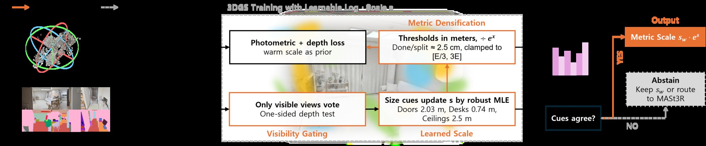
47 ScanNet++ scenes with laser ground truth, under a configuration frozen after the first 19 and then applied unchanged to the remaining 28.
| Method | Mean scale error (47 scenes) |
On the 28 scenes ours acts on |
Cost / abstains? |
|---|---|---|---|
| Quantile floor→ceiling heuristic | 21.1% | 16.8% | in-pipeline, never |
| Depth Anything 3 (metric alignment) | 28.8% | — | never |
| MASt3R (metric checkpoint) | 9.9% | 10.2% | full reconstruction, never |
| MoGe-2 (in-domain‡) | 2.3% | — | never |
| METRIC-GS (Ours) | 16.6% | 9.3% | ~10 s, abstains on 19 |
‡ ScanNet++ sits inside MoGe-2's training corpus, so that row is in-domain and not comparable. Outside its mixture the same model errs by 28–35% on ordinary captures — the measurement the paper argues is worth reporting on its own.
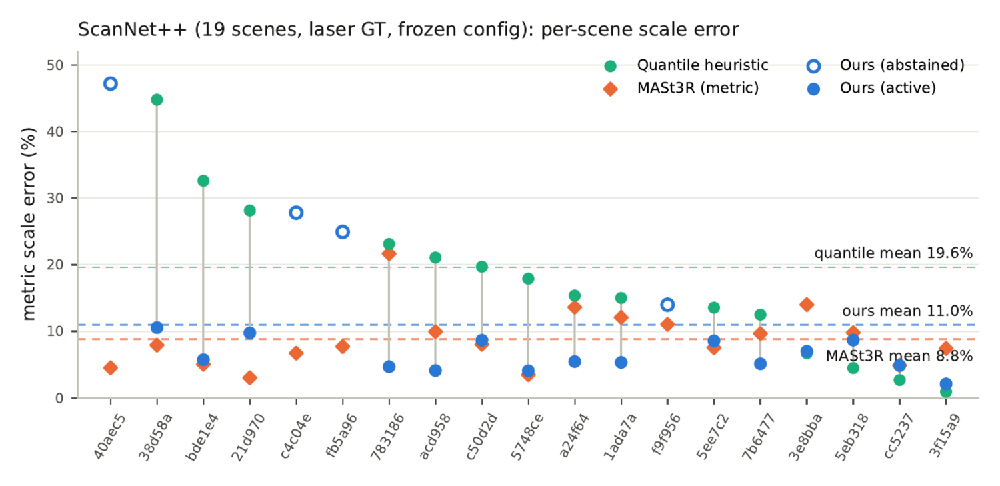
13 captures recorded on phones and a drone, with no tuning and no per-dataset configuration — offices, a robotics lab, a house corridor, a show flat, and residential interiors. The system improves all five captures it acts on, abstains on the other eight, and degrades none. The videos below carry the delivered scale bar and the act/abstain decision burned in, so each clip states what the estimator actually claimed about that scene.
Office floor and house corridor (acts), apartment A (acts), robotics lab and show flat (abstains, no usable anchor), home B phone capture and home C photo set (abstains).
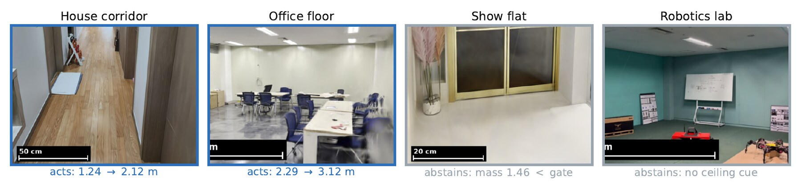
Sole developer · prior rendering, neural SDF distillation, meshing, export
A scene-level alternative to SuGaR for extracting meshes from 3D Gaussian Splatting, built to run comfortably on a single 16 GB GPU at full mip360 scale — where SuGaR's joint mesh↔Gaussian refinement becomes impractical. SuGaR is expensive because it re-regularizes all Gaussians toward a surface, Poisson-reconstructs from dense samples, and then binds Gaussians to mesh triangles and jointly optimizes both. That last stage is what blows up VRAM.
This method inverts the arrangement: the 3DGS is frozen and never optimized again, and
serves only as a read-only oracle. Using the override-color trick on the stock rasterizer
— no CUDA rebuild, no depth-capable fork — each training view yields alpha-blended
expected depth, accumulated opacity, and depth variance in a single pass (colors
[z, 1, z²]), plus camera-oriented world normals in a second. Those geometric
priors are distilled into a continuous neural SDF, a pure-PyTorch multi-resolution hash grid
with a small MLP, supervised by multi-view projective TSDF with free-space carving, an
Eikonal term, and normal consistency. Per-ray confidence comes from opacity × depth
uncertainty, 1/(1+λ·Var/d²), so noisy and translucent pixels
down-weight themselves automatically.
Extraction is marching cubes with the full grid held in CPU RAM while only batches touch the GPU, gated by a surface-support mask built from dilated observed depth points that forbids zero-crossings in unobserved space — which is what kills the hallucinated geometry that plagues unconstrained neural SDFs. Because multi-view TSDF fusion into a continuous field averages out the per-view noise of vanilla 3DGS depth, the result is a coherent surface without ever flattening or retraining the Gaussians.
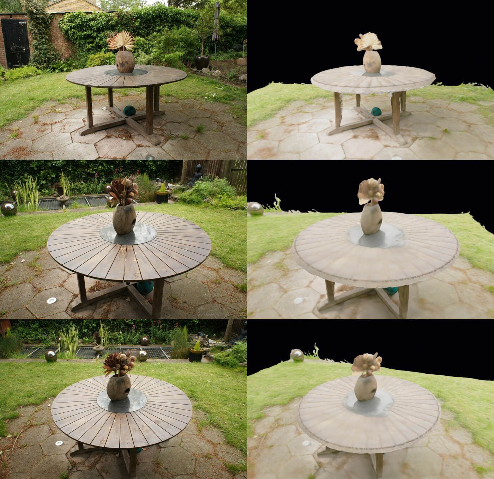
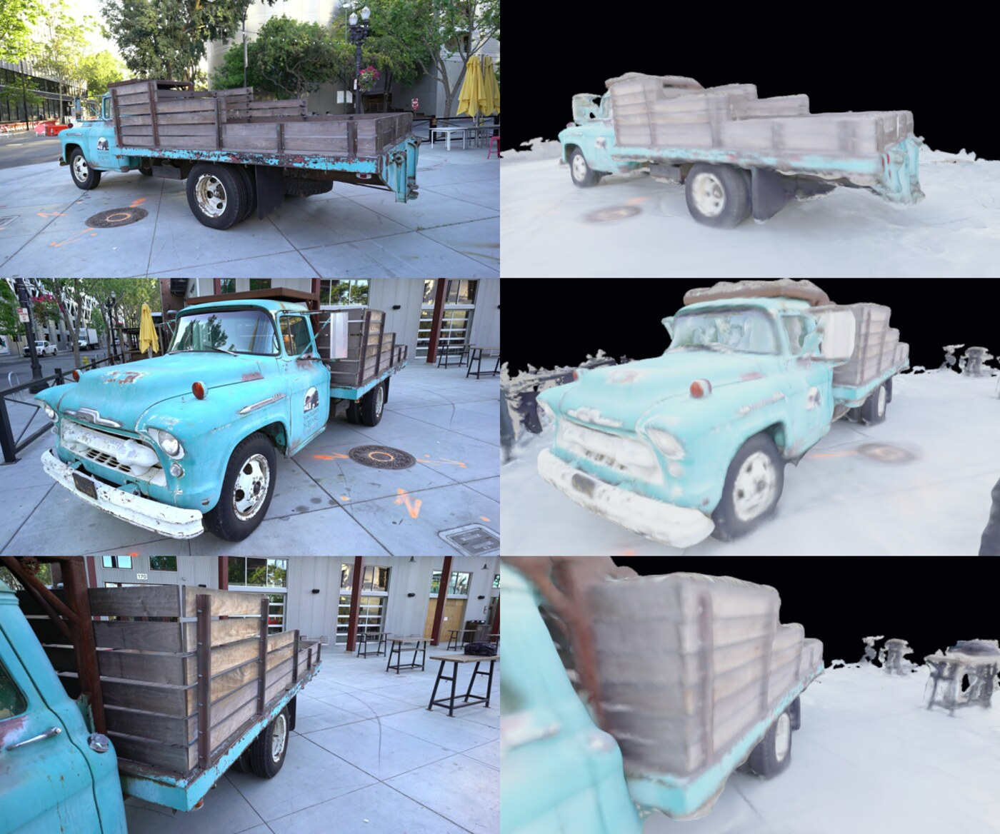
| Stage | Time | Peak VRAM |
|---|---|---|
| Render priors | ~4 s | 0.7 GB |
| Distill SDF (8k it.) | ~12 min | ~4.5 GB |
| Extract @512³ (+ color + texture) | ~1–2 min | <1 GB |
| Viewer feature field (3k it.) | ~13 min | ~6 GB |
Control & Robotics
First author (with J. B. Choi and S. B. Choi) · derivation, implementation, two-domain evaluation, ablation
Boundary-layer Sliding Mode Control (SMC) has been applied to vision-based stabilization, but identifying its activation condition against simpler causal baselines (LPF, PID) has been elusive. The operational condition is plant binding: the disturbance velocity approaches or exceeds the actuator slew limit, so the bounded per-step actuation budget binds. We validate this in two independent vision domains: handheld translation stabilization (12 1080p clips; LPF, PID, SMC, L¹) and angular re-framing against a virtual slew-rate-limited pan–tilt–zoom (PTZ) plant. Outside binding, leave-one-out cross-validation makes SMC and LPF on translation statistically indistinguishable, and PID beats SMC on the angular 99th-percentile pointing offset by 5.85° (95% CI clear of zero); inside binding — reached only by sweeping the simulated slew limit, as both captured datasets land outside it — the translation gap stays a tie and SMC beats PID on the angular worst case (Cohen's d up to +0.83). The PTZ plant's 100°/s default sits on the cross-over, which explains a small-margin PID result previously reported in the angular setting. A complementary ablation shows raising the SMC reaching gain k costs mean tracking outside a narrow window.
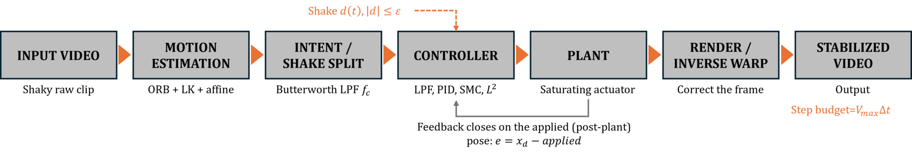
Handheld video stabilization is normally treated as a trajectory-smoothing problem. This work reframes it as disturbance rejection. Per-frame camera motion (tx, ty, θ) is recovered with an ORB + Lucas–Kanade pipeline and split by a zero-phase Butterworth filter into the operator's intentional pan and a high-frequency shake residual. The shake is then modelled as a bounded matched disturbance |d(t)| ≤ ε acting on a virtual unit-mass double integrator whose state is the per-frame compensating warp, and a boundary-layer sliding mode controller is designed on the tracking error:
ẋ₁ = x₂, ẋ₂ = u + d(t), |d(t)| ≤ ε
s = c·e + ė, u = ueq − k · sat(s/φ), k > ε
The paper proves finite-time reaching of the boundary layer under k > ε via a Lyapunov argument, and identifies a discrete-time stability constraint that the SMC literature under-discusses: the boundary-layer thickness must satisfy φ > kΔt/2, or the discretized controller chatters regardless of how sound the continuous-time design looks.
What makes the evaluation worth reading is that it began as two negative results and the paper is the explanation of them. On 12 handheld 1080p clips SMC came in behind a causal Butterworth low-pass filter by 2.67 px of above-cutoff residual; on a virtual PTZ plant it came in behind a tuned PID by 5.85° at the 99th-percentile pointing offset. Both drafts read as "SMC underperforms". Neither identified the regime in which bounded-disturbance robustness actually becomes load-bearing.
The resolution is a single condition. The discontinuous machinery only pays for itself when the disturbance velocity approaches the actuator's slew limit — when the bounded per-step actuation budget binds. Outside that regime, leave-one-out cross-validation makes SMC and LPF on translation statistically indistinguishable (+0.050 px, CI crossing zero) and PID genuinely wins the angular worst case. Inside it, reached by sweeping the simulated slew limit through the crossing, the translation gap stays a tie and SMC takes the angular worst case with Cohen's d up to +0.83. The PTZ plant's 100°/s default happens to sit almost exactly on the cross-over, which is why the earlier comparison read as a structural SMC deficiency when it was an operating-point choice. The paper scopes the claim honestly: the sweep is simulated, and the hardware demonstration is future work.
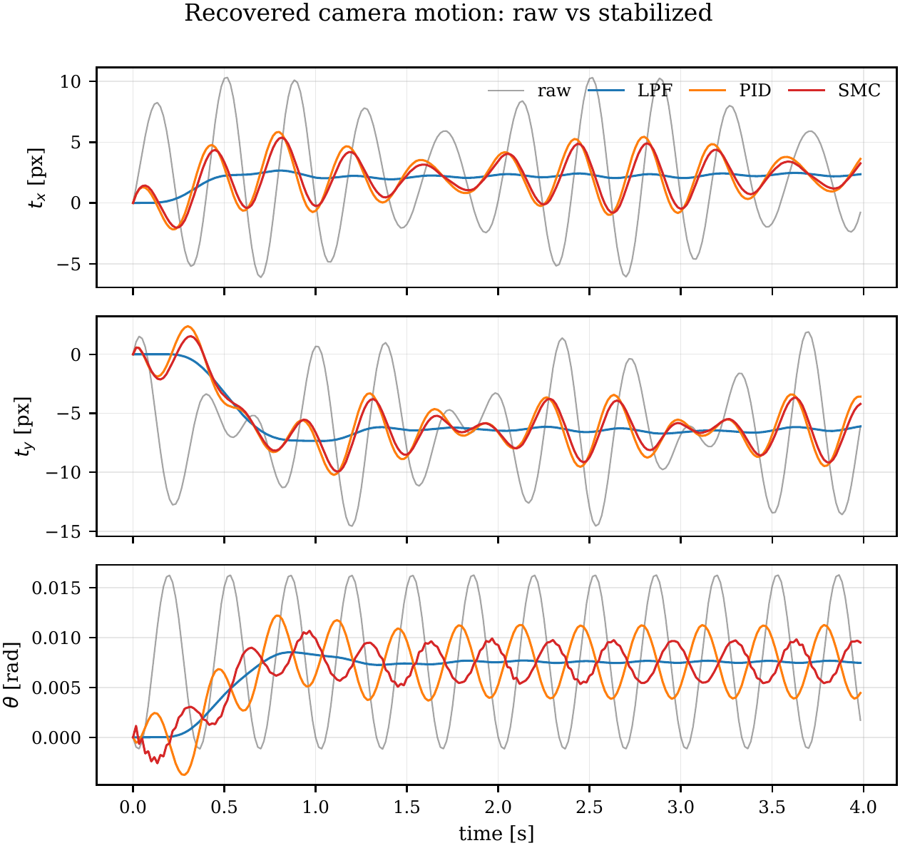
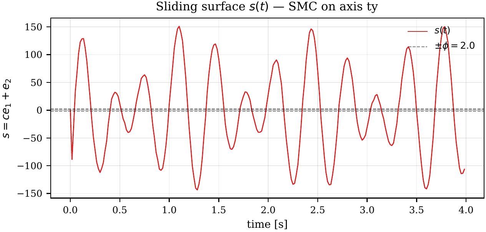
Single-thread CPU benchmark, 5000-frame median, BLAS pinned to one thread:
| Method | ms / frame | Causal? | Real-time ceiling |
|---|---|---|---|
| LPF | 0.012 | yes | — |
| SMC (proposed) | 0.019 | yes | — |
| PID | 0.019 | yes | — |
| L¹ full (whole-clip LP, amortised) | 0.56 | no | — |
| L¹ windowed (60-frame sliding LP) | 7.0 | no | 142 fps |
estimateAffinePartial2D already orthogonalises (tx, ty,
θ) — a negative result worth reporting.Sole developer · Flutter/Dart app, native Kotlin tracker layer, ORB-SLAM3 integration, PC-side pipeline, AR deployment
Capturing a 3D-Gaussian-Splatting dataset with a phone normally means shooting blind. You walk a room, you guess at how much to move between shots, and you find out hours later, on a PC, whether COLMAP could register the images at all. If it could not, the room is gone — the lighting has changed, the furniture has moved, and the capture has to be redone. That feedback loop is the single biggest practical obstacle to non-expert 3D capture, and it is what this system exists to close.
The result is one application that guides the operator while scanning, runs structure-from-motion on the phone so the COLMAP model is complete the moment recording stops, and pins AR markers in world space at each capture point so the operator can see their own coverage. It arrived through three distinct phases of work, and the discarded versions are as informative as the surviving one.
The first question was narrow and answerable: can a phone tell you when to capture the next frame using camera pixels only — no IMU, no ARCore, no depth — cheaply enough that the preview never stutters? Frame-to-frame overlap is what makes COLMAP matching succeed, and it is exactly what an operator cannot judge by eye.
A throwaway Flutter mockup answered it. Three real-time signals, no map, no persistence beyond the current keyframe: an overlap gauge with the sweet spot marked explicitly (green at 60–80%, amber above 80% for "barely moved" or 50–60% for "capture soon", red below 50% for "gap risk"), a motion warning when tracked points jump too far per frame, and a tracking state that reports collapse when the point set dies on blur or a blank surface. An AUTO mode fired captures inside the green band with a 1.5 s cooldown.
The engineering lesson came from a failure. The first iteration used ORB
detect-describe-match with a homography coverage map, and it was too slow and lost tracking
constantly. The rework threw out both: detect-describe-match was replaced with sparse
optical flow, and the map was dropped entirely. Corners are detected only when a
keyframe is set (goodFeaturesToTrack, ≤250 points), never per frame; each
analyzed frame simply tracks the keyframe's points forward with pyramidal
Lucas–Kanade. Flow on a 384 px image costs low single-digit milliseconds and is more
stable under small motion than feature matching ever was.
The rest was throughput discipline that carried into the production app. The camera streams
YUV420 and the Y plane is used directly as grayscale with no color conversion,
hard-downscaled to 384 px, while the preview stays full resolution because analysis never
touches its pixels. Analysis is throttled to ~14 Hz inside an isolate where the newest frame
wins and everything else is dropped — no queue, so latency cannot accumulate. The UI
updates through ValueNotifier-driven CustomPaints inside
RepaintBoundarys, so the widget tree is never rebuilt per frame.
The production application was built in eight recorded stages, and its architecture is the product of one full round trip. It began as an ARCore point-cloud minimap, was torn down and rebuilt as a portable pure-RGB collector, and then came back around — ARCore returned as an optional tracker behind a platform-agnostic contract. The rebuild is what forced the abstraction that now makes iOS support additive rather than a rewrite.
Session, because no Flutter AR plugin exposes the raw point cloud and
pose stream. Native side handles session lifecycle, GL camera background, per-frame sparse
point cloud and Depth API sampling, world-space voxel dedup, and streams
{pose, new voxels, tracking state, stats} to Dart over an EventChannel.The app now picks the best of three capture modes automatically, degrading one rung at a time rather than failing outright:
All logic — keyframing, COLMAP model writing, session storage, UI — is shared
Dart. The only platform-specific piece is a thin tracker layer behind a single channel
contract (lib/device_tracker.dart): ARCore in Kotlin today, with ARKit in Swift
able to implement the same contract for iOS. A phone without ARCore, or without a gyroscope,
steps down gracefully.
[phone] SLAM AR scan ─────▶ COLMAP model built live on the phone │ (sessions/<id>/images + sparse/0) ▼ USB (adb) [PC] rgbm_pipeline.py run ──▶ package (0.1 s) or --refine (~2 min) │ ▼ [PC] gaussian-splatting train.py ──▶ 3D model
The videos below are the finished system running on a consumer handset during a real office scan. Everything visible is computed on the phone: the recording timer and keyframe counter (rising toward a 100-frame target), the live overlap gauge showing current versus target overlap, per-frame processing latency, angular rate, tracked point count, a live top-down map growing as the room is explored, and green AR markers pinned in world space at each capture point so the operator can see their own coverage from across the room.
The guidance is plain language rather than diagnostics — "Good, keep scanning slowly", "Initializing, translate the phone sideways over texture", "Tracking lost, go back to a mapped textured area". Per-frame latency stays in the 21–53 ms band throughout, which is what keeps the guidance honest: a gauge that lags is worse than no gauge, because the operator has already moved by the time it updates.
AR is also where floater suppression stops being an aesthetic concern and starts being a functional one. In an offline viewer a floater is soft haze you can look past. Registered against the real world on a handset, unsupported density sits visibly in mid-air where a viewer can walk around it and see it from angles the training set never contained — which makes on-device AR a fairly brutal qualitative test for exactly the artifacts the research half of this portfolio exists to remove.
Mid-scan: keyframes accumulating, overlap gauge tracking toward target, AR markers pinned at each captured viewpoint.
Later in the same session: the live top-down map has grown down the corridor, and tracking-loss recovery guidance fires on a textureless stretch.
A segmentation-guided reconstruction deployed back onto the handset in AR — the round trip from capture to reconstruction to on-device viewing.
--refine
pass takes ~2 min. Neither involves waiting for a from-scratch reconstruction.Sole developer · environment engineering, version resolution, smoke testing
Reproducible simulation infrastructure for reinforcement-learning and active-perception experiments — the closed-loop testbed that ReVisit-GS's planning work needs in order to move from offline campaigns to embodied evaluation.
The substantive part of this work is the version resolution, which is the kind of thing that silently costs a week if you get it wrong. Isaac Sim 5.0.0 was chosen deliberately: the lab machine runs NVIDIA driver 535.309.01, while Isaac Sim 6.0 requires driver ≥ 595 and 5.1 is tested against 580.65.06. Isaac Sim 5.0's minimum tested driver is 535.216.01 — so 5.0 is the newest release the hardware actually qualifies for without a driver upgrade that would disturb every other CUDA project on the machine. Isaac Lab 2.2.x is the matching framework generation for that runtime.
Installed via pip into a pinned conda environment on Python 3.11, with a headless smoke test for verification, a GUI launcher, and scene assets, plus documented cache locations so that rebuilding on another machine is mechanical rather than exploratory.
What the workspace is actually for is closing the loop between the reconstruction work and an embodied agent. Real captures are reconstructed with 3DGS, meshed with DiSDF-GS, and loaded back into Isaac Sim as collidable worlds — so a legged robot can walk on a scanned garden, rigid bodies can drop onto a scanned surface, and the ReVisit-GS planner can be evaluated closed-loop under a real motion budget instead of teleporting between poses. Reconstruction quality stops being a rendering metric at that point and becomes a physical one: a floater is a phantom collider, and a hallucinated floor is a robot falling through it.
ANYmal walking on the reconstructed garden scene
The same robot on truck (Tanks and Temples)
Wheeled traversal across the same reconstructed geometry
Rigid-body drop test — the collision surface comes from the reconstruction itself, so the physics is a direct read on mesh quality.
The garden mesh extracted by DiSDF-GS, orbited live inside Isaac Sim — the hand-off between the meshing work and the simulator.
Applied & Collaborative Work
First author (with J. B. Choi) · presented at the Korean Society of Mechanical Engineers, Reliability Division
The deployment-facing framing of the floater-suppression research, and the one piece of this portfolio that has been presented rather than submitted.
In remote Prognostics and Health Management, a reconstruction method faces two constraints simultaneously that the computer-vision literature rarely imposes together: it must be light enough to run on-site with the compute an inspection team actually carries, and it must produce geometry good enough to transmit, visualize, and analyze for condition assessment. Indoor environments make both harder. Narrow structures, complex boundaries, occlusion, reflection, and background interference are exactly the conditions under which 3DGS manufactures floating artifacts unrelated to real structure — and those artifacts do not merely lower a metric. They actively obstruct the thing the inspection exists for: reading surface condition, structural boundaries, and signs of abnormality.
The system developed here targets that regime directly, applying semantic-information-based alignment and control strategies to suppress structurally implausible Gaussians while operating within a low VRAM budget. The result is an approach whose practical deployability and reconstruction quality improve together rather than trading against each other, which is the argument for its viability as a practical indoor remote-PHM method.
Research assistant · capture protocol, operator guidance material, IMU integration, mobile and drone deployment, reconstruction tuning, interim evaluation reporting
A government-funded metaverse lab program covering the full path from raw capture to a reconstruction someone can actually deploy. Unlike benchmark work, the binding constraints came from the field rather than a leaderboard: non-expert operators, phones and drones instead of rigs, uneven interior lighting, and a VRAM budget set by whatever hardware happened to be available on site.
My contributions spanned the pipeline. On the capture side, a structured data-collection protocol, the operator guidance material below, and the IMU-assisted capture work that grew into the mobile capture system described above — the practical lesson being that in the field, capture quality dominates final quality far more than the choice of reconstruction algorithm. On the reconstruction side, tuning the pipeline to run within practical VRAM budgets across drone, handheld, and consumer-phone sequences. On the reporting side, interim evaluation materials for the funding body's review milestones.
This program is also where the motivation for most of the research above became concrete. Floaters are an abstraction in a benchmark table. They are a very specific, very visible problem when a non-expert operator walks a phone through an apartment interior and the result comes back with haze smeared across every ceiling — which is precisely the artifact visible on the ceilings in the residential scans below, and precisely what the floater-suppression research was built to remove.
Full-apartment captures across two show units — kitchen, living room, and bedrooms — reconstructed with the segmentation-guided pipeline. Interiors are the hard case: textureless white walls give almost no photometric gradient to anchor Gaussians, curtains and glossy floors are view-dependent, and the ceiling is where unsupported density collects.
Show unit 1 (kitchen, living room, bedroom) and show unit 2 (living room).
Reconstruction quality in this program was decided at capture time by people who were not researchers, so a large part of the work was turning "get good coverage" into instructions somebody can actually follow. These animated guides encode the capture protocol for the three situations that broke reconstructions most often: rooms (three laps with your back to the wall, camera toward the room centre, at three heights), corridors (three passes, walking all the way to the far end at each height rather than turning early), and hinges and doorways — flagged as the most important case, because door frames are where two rooms have to agree geometrically and where a sloppy capture splits a scene in two.
Room scan — three laps, three heights
Corridor scan — three full-length passes
Hinges and doors — the critical case
IMU-assisted capture result
Reconstruction from a consumer folding-phone capture
Data-collection procedure in practice
Tools & Evaluation
Sole developer · feature-field training, CUDA selection and editing kernels, SIBR viewer, end-to-end pipeline
A reproduction of InterGS (ECCV 2024) that supplies the piece the original release does not: an actual interactive viewer. The published work describes click-to-segment editing of a 3DGS scene; the code ships no way to click. This repository builds one on top of the SIBR real-time Gaussian viewer, so a scene goes from raw video to an interactive editor in three commands and a click segments the object under the cursor in a few milliseconds — after which it can be deleted, resized, translated, or duplicated live.
The pipeline trains vanilla 3DGS, generates SAM automatic masks for every training view, sorts them by area into a two-level coarse/fine granularity prior, and attaches a learnable 24-d feature (12 coarse + 12 fine) to every Gaussian. Those features are trained contrastively on α-blended 2D feature maps and then refined by Global Feature-guided Learning over HDBSCAN clusters, before being exported into an augmented PLY that carries the usual 3DGS attributes alongside the features. The viewer reads the feature under the clicked pixel, takes cosine similarity against every Gaussian, and selects everything above threshold. Selection and editing are CUDA kernels, which is what keeps both interactive rather than a round trip through Python.
--gs_model to add only the feature field.Sole developer · metric definition, teacher-mask caching, multi-method harness
Floater removal is genuinely hard to evaluate, because the standard metrics are close to blind to it. Floaters occupy few pixels, so PSNR barely moves; a method can remove every artifact in a scene and show almost nothing for it in the headline number. That makes it easy to publish floater work that is not actually removing floaters — and easy to fool yourself in the process.
FSV measures the thing directly: mean accumulated opacity inside high-confidence free-space pixels. Density where there should be none. Free-space masks come from Mask2Former ADE20K labels with a deliberately conservative class set — sky, sea, river, lake — regions where a false positive is nearly impossible, and the masks are cached once so that every method under comparison is scored against a byte-identical mask rather than a re-derived one. Where a renderer does not return alpha directly, each view is rendered twice on black and white backgrounds to recover it, so the metric never requires modifying anyone's rasterizer.
The design constraint throughout is independence. A method that scores its own risk estimate against its own internal state proves nothing at all. FSV is external by construction, which is what lets it serve as a check that a reliability signal corresponds to something real in the world.